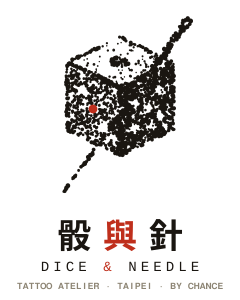

三雙手
THE HANDS BEHIND THE DOTS全店三個人,每人每天的墨點產量約三萬顆,手比你想像的穩,話比你想像的多。 肖像一樣是密度場點描畫的——本人比較好看,但點數是一樣的。
衛生與消毒規範
HYGIENE PROTOCOL嘴砲是本店的裝潢,消毒是本店的地基。以下八條為固定作業程序,每一位客人、每一次下針,無例外。
針具與耗材全一次性
針、針嘴、握把套、墨杯、轉印紙均為一次性用品,於客人面前拆封;使用後直接進入銳器盒,不重複、不回收、不「洗一洗再用」。
器械高壓蒸氣滅菌
非拋棄式器械每日以高壓蒸氣滅菌鍋處理,每鍋附化學指示片確認滅菌完成;滅菌批號與日期登記留存,可供查驗。
工作區每客更換隔離
工作檯面、機身、電源線、噴瓶均以防護膜包覆,每位客人結束後全數更換,檯面並以醫療級消毒劑擦拭靜置。
手部衛生與手套
刺青師於接觸前完成手部消毒並全程佩戴一次性手套;中途接觸任何非無菌物品(手機、門把、你的手機)即更換新手套。
墨水一次性分裝
墨水自原瓶分裝至一次性墨杯,用剩即棄,絕不回倒原瓶;原瓶瓶口不接觸任何器具。
醫療廢棄物委外處理
使用後之針具與汙染耗材置入專用銳器盒與感染性廢棄物袋,委託合格醫療廢棄物處理機構清運,不進一般垃圾。
年齡與證件查驗
未滿十八歲不提供刺青服務,證件必查,無證件即改期。代替朋友來問「可不可以通融」的,答案也是不行。
身體狀況評估
施術前確認健康狀況:飲酒後、發燒或皮膚病灶發作期間不施術;孕期、哺乳期、服用抗凝血藥物或有蟹足腫體質者,請先諮詢醫師並主動告知。
以上程序參考一般刺青產業之衛生管理慣例訂定(本站為虛構示意,非醫療建議)。 對消毒流程有任何疑問,歡迎當面要求我們示範拆封與換膜——這是全店最樂意被質疑的環節。
術後照護指南
AFTERCARE, BY THE CLOCK點描的成敗,一半在針上,一半在你回家後的自制力。照顧得好,墨點清晰銳利;照顧得差, 你會得到一張糊掉的版畫,而且不能按重抽。
保留敷料
- 離店時的保護膜至少保留 2–3 小時
- 拆除後以生理食鹽水或煮沸放涼的清水沖淨
- 乾淨紙巾「按乾」,不要擦
清潔與薄擦
- 每日 2–3 次以無香精抗菌皂溫水輕洗
- 薄擦一層專用修護膏,薄到會反光就太厚
- 穿寬鬆衣物,避免摩擦與悶熱
結痂與脫皮期
- 會癢、會脫屑,絕對不摳不抓
- 不泡水:泳池、溫泉、海邊、浴缸一律禁止
- 避免烈日直曬與劇烈流汗運動
穩定與回檢
- 表皮癒合,墨色進入穩定期
- 外出開始使用防曬,點描最怕紫外線
- 1–6 個月內回店免費補色一次
何時該去看醫生
紅腫熱痛持續擴大、化膿滲液、發燒或出現紅色條紋往外延伸——這些不是「正常結痂」,請直接就醫,回頭再告訴我們。 皮膚是你的,面子是我們的,兩個都要顧。
預約與訂金
BOOKING & DEPOSIT全預約制,不收 walk-in——不是耍大牌,是點描很慢,慢到無法「順便幫你刺一下」。流程四步,規矩五條,讀完再來,雙方都省三封訊息。
來訊報圖
私訊 IG 或來信,附上想刺的 flash 名稱或抽卡 seed 碼(例如 SEED A7K2MQ 第 1 擲),加一張想刺部位的照片。
對時段
我們於 48 小時內回覆可預約時段與確認報價。價格以 圖庫價目 為準,不加價也不議價。
付訂金
匯款訂金 NT$1,000 後預約才成立;先搶時段後付款的操作,在本店不存在。
當日報到
攜帶身分證件,提早 10 分鐘,睡飽、吃飽、不喝酒。狀態好的皮膚,吃墨漂亮一倍。
訂金條款
- 訂金全額折抵尾款
- 改期請於 48 小時前告知,訂金保留,限改一次
- 遲到 30 分鐘以上視同取消,訂金不退
- 無故未到,訂金不退,且骰子會記住你
- 本店臨時取消時,訂金全退並加贈下次 S 尺寸折抵 NT$500
持命運價資格者(抽卡第一擲全收、未重抽),來訊時附上分享連結,經 seed 驗證後整單 9 折。重抽過的連結騙不了機器,別試。
找路情報
WHERE & WHEN在赤峰街的打鐵聲與咖啡香之間,二樓,綠色鐵門,門鈴上貼著一顆骰子。按一下就好,按六下不會比較快。
- 店址
- 103 台北市大同區赤峰街 41 巷 7 號 2 樓
- 交通
- 捷運中山站 4 號出口步行 6 分;騎樓不好停車,建議捷運或步行,順便醞釀決心
- 電話
- (02) 2559-0041(預約仍以訊息為主,電話常常沒人接,因為手上有針)
- 營業
- 週三–週一 13:00–21:00.週二公休(骰子也要休息)
- 聯絡
- hello@dice-needle.example.tw.IG @dice.needle.tpe(皆為虛構)
- 參觀
- 歡迎預約前先來看環境與消毒流程,看完再決定。免費,含一杯麥茶

DICE & NEEDLE — STIPPLE MARK
手工點描.約兩千顆墨點.含一顆朱紅
本站內容為虛構示意
「骰與針 DICE & NEEDLE」為設計展示創作:店家、刺青師、地址、電話、價目與所有故事均為虛構, 不對應任何真實店家或人物;衛生與照護內容僅為示意文案,非醫療建議。如有雷同,是機率的錯。